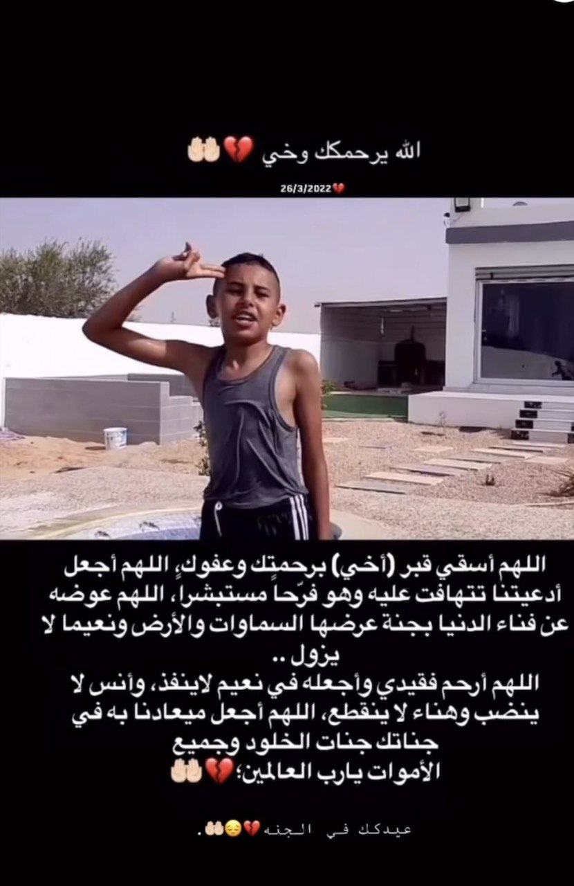
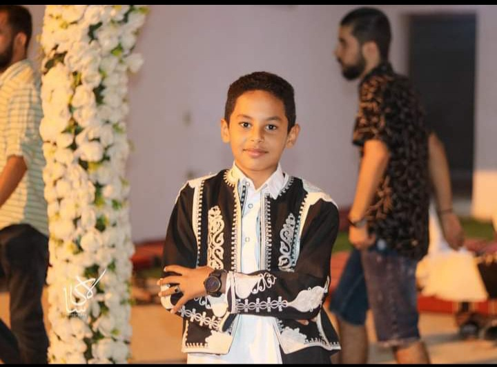
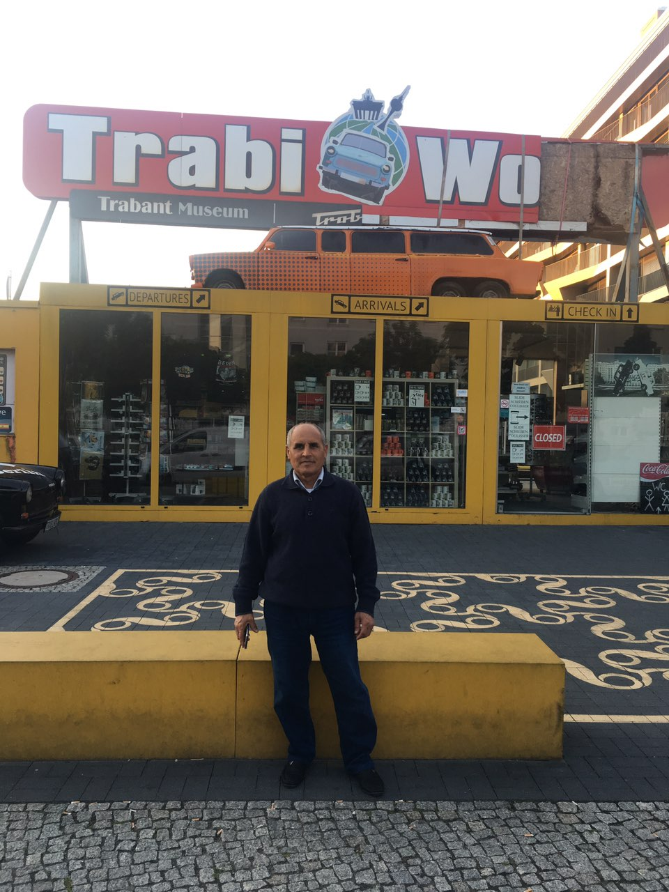

أخي الحبيب
في يوم 26 / 3 / 2022 رحل عني صغيري الغالي،
أخي الذي كان عنوان الفرح والضحك، طيب القلب لا يعرف الحقد ولا الحزن.
كان يحب اللعب، وينشر السعادة أينما ذهب، وصوته لا يزال يملأ البيت حياة.
رغم صِغر سنه، إلا أنه ترك بصمة لا تُنسى في قلوبنا جميعًا.
رحمك الله يا أخي، يا أجمل من مرّ في حياتي،
وجعل الله مكانك في جناتٍ لا حزن فيها ولا وداع.


أبي الغالي
في يوم 27 / 6 / 2022 توقّف الزمن بالنسبة لي.
رحل أبي في حادث سيارة مؤلم، تاركًا خلفه فراغًا لا يُملأ، وذكريات لا تُنسى.
كان أبي مصدر الأمان والحنان، كلماته كانت تزرع الطمأنينة في قلبي،
وضحكته كانت تبعث الحياة في المنزل.
رحيله لم يُطفئ النور الذي زرعه فينا، بل صار ضوءًا يرشدني في كل لحظة ضعف.
رحمك الله يا أبي، وجعل مثواك الجنة، وجمعنا بك في دار لا فراق فيها أبدًا.


ذكريات محفورة في القلب
رغم الفقد والألم، يظل أبي وأخي الحبيب حاضرين في قلبي وروحي.
ذكرياتهم، ضحكاتهم، وحنانهم، كلها نور يضيء أيامي، ويعلمني أن الحياة مستمرة رغم كل غياب.
أدعو الله أن يجمعنا بهم في جناتٍ لا حزن فيها ولا وداع،
وأن يرزقنا الصبر والقوة لنعيش بالحب الذي تركوه لنا،
ونحافظ على ذكرهم حيًا في كل لحظة وكل نفس.